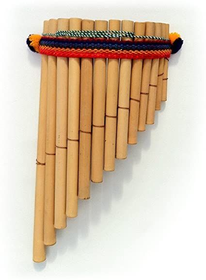
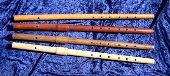

Did you know that from 1600 to 1750 flute meant recorder?! Also back then
music players used them in orchestras, usually in pairs. Pan flutes were used
for many centuries. Pan flutes look like this: 
Later, the "Renaissance flute" got invented. it looks like this:

Also the flute was made of wood a long time ago.
The wood was usually African Blackwood.
It could also be made of bamboo. Most flutes
now are made out of silver, gold, platinum, or aluminum.
The flute sounds very bright and cheerful playing high notes.
Flutes can also sound airy, light, poetic, mellow, bright, wafting,
ethereal, rich, soft, graceful, penetrating, brilliant, clear,
shrill, silvery, wind-like, whistling, whispering, humming,
filigree, sighing, aspirate. A flute makes noise when someone
blows on the mouthpiece, causing the air in the tube to vibrate.
by eman